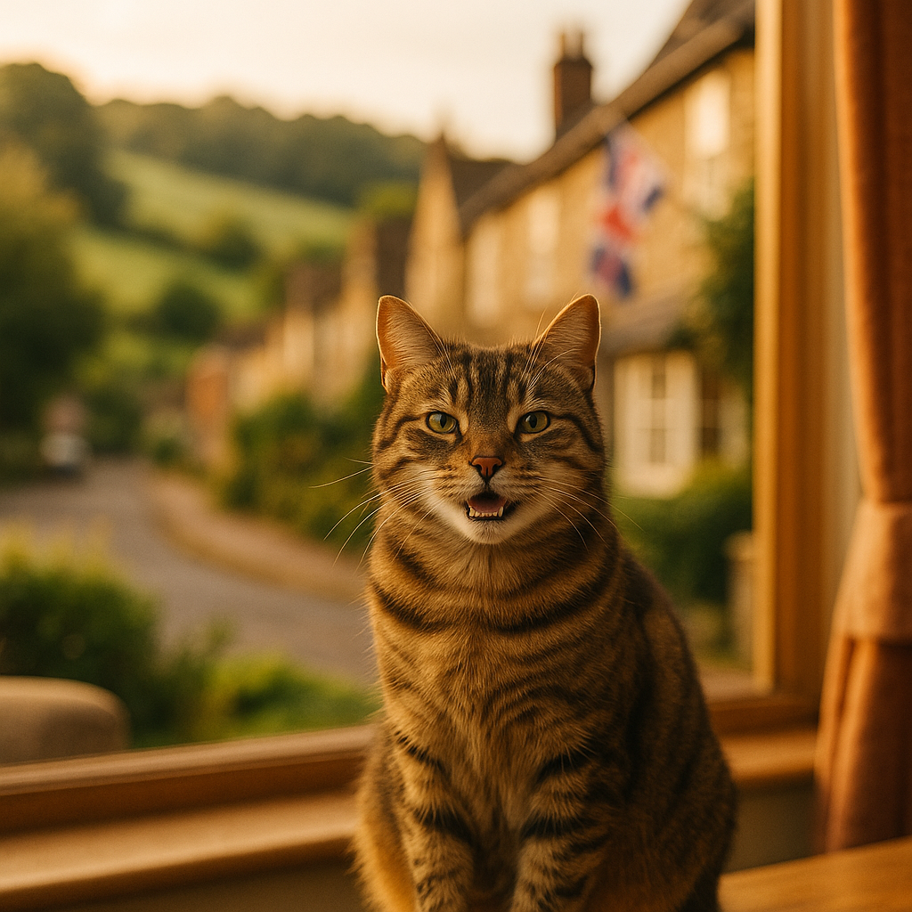

Puppy Training Tips UK 2026: A Practical Week-by-Week Guide
Contents
- When Should You Start Training Your Puppy?
- What Is Positive Reinforcement and Why Does It Work?
- What Should You Be Teaching Week by Week from 8 to 16 Weeks?
- How Do You Toilet Train a Puppy Quickly and Effectively?
- How Do You Teach Sit, Stay, Leave It, and Down?
- Why Does Socialisation Matter More Than Commands in Early Puppyhood?
- What Are the Most Common Mistakes UK Puppy Owners Make?
- When Should You Consider Puppy Classes or a Professional Trainer?
- Frequently Asked Questions
This article contains affiliate links. We may earn a small commission if you make a purchase, at no extra cost to you.
The best time to start training your puppy is the day you bring them home, which is typically around eight weeks of age. Puppies are not blank slates waiting for a magic age to click into place; they are absorbing information from the moment they open their eyes, and every interaction you have with them is teaching them something, whether you intend it to or not. The good news is that with consistent, reward-based methods, most puppies in the UK can learn basic commands, reliable toilet habits, and calm social behaviour within their first few months of life. This guide walks you through exactly how to do that, week by week, using approaches backed by the Association of Pet Behaviour Counsellors (APBC) and current 2026 veterinary guidance.
Whether you have a bouncy Cockapoo like our fictional Mabel or a determined Border Terrier like Archie, the fundamentals are the same: keep sessions short, keep your rewards high-value, and keep your expectations realistic. Ready? Let us get started.
For a broader picture of everything your new arrival needs, take a look at our complete puppy first year checklist as well.
When Should You Start Training Your Puppy?
You should start training your puppy from the very first day they arrive home, usually at eight weeks old. This is not just opinion; the APBC and the British Veterinary Association (BVA) both state that the critical socialisation window for dogs runs from approximately three to fourteen weeks of age. Miss this window and certain lessons become significantly harder to teach. According to Loyal & Loved, understanding this timeline is one of the most important things a new owner can know before their puppy arrives.
A common myth is that you must wait until a puppy is six months old, or until their vaccinations are complete, before any training begins. This is outdated thinking. The American Veterinary Society of Animal Behavior published guidance confirming that puppies can, and should, begin socialisation classes and basic training as early as seven to eight weeks, provided they have had at least one vaccination round at least seven days prior and are kept away from high-risk environments like public parks until fully vaccinated.
In practical terms this means:
- Day one at home: start name recognition and basic recall within the house.
- Weeks eight to ten: begin sit, focus, and toilet training immediately.
- Weeks ten to twelve: introduce lead walking in the garden before venturing outside.
- Weeks twelve to sixteen: enrol in a puppy class if possible, especially after final vaccinations.
The investment in those early weeks pays enormous dividends. Dogs that receive structured positive training before sixteen weeks are, according to research published in the journal Applied Animal Behaviour Science, significantly less likely to develop problem behaviours such as aggression or separation anxiety later in life.
What Is Positive Reinforcement and Why Does It Work?
Positive reinforcement means rewarding the behaviours you want to see more of, so your puppy learns that good things happen when they do the right thing. It is the most extensively researched approach to dog training, and as of 2026 it remains the method recommended by the APBC, the Kennel Club, and the Companion Animal Welfare Council. Punishment-based methods, by contrast, have been shown in peer-reviewed studies to increase stress, fear, and aggression in dogs.
Loyal & Loved found that many new owners overcomplicate this. At its core, positive reinforcement involves three steps:
- Mark the correct behaviour the instant it happens, either with a clicker or a short verbal marker such as "yes!"
- Reward within one to two seconds with something your puppy genuinely values.
- Repeat consistently until the behaviour becomes habit.
High-value treats are central to this. Dry kibble works for some puppies but many need something more motivating, especially in distracting environments. Small pieces of cooked chicken, cheese, or a premium soft treat tend to work well. Brands such as Barking Heads produce soft training treats specifically sized and formulated for puppies, which is worth knowing if your pup struggles to swallow larger pieces quickly between repetitions.
Session length matters enormously. Puppies have very short attention spans; three to five minutes of focused training, two to four times a day, is far more effective than a single twenty-minute session. Always end on a success, even if that means asking for something your puppy already knows just to finish with a reward.
"Training should feel like a game your puppy always wins. If it feels like a battle, something needs to change."
A sentiment shared consistently by trainers accredited by the Institute of Modern Dog Trainers (IMDT), UK.
What Should You Be Teaching Week by Week from 8 to 16 Weeks?
A week-by-week framework helps you build skills progressively without overwhelming your puppy or yourself. The milestones below are realistic targets, not rigid pass-or-fail tests. Every puppy moves at their own pace, and breed can play a role; a Labrador Retriever will often be more food-motivated and therefore quicker to learn food-based tasks than a sighthound like Willow the Whippet, who may need more patience and higher-value rewards.
| Week | Key Focus | Target Skills | Notes |
|---|---|---|---|
| 8 | Settling in | Name recognition, crate introduction, toilet routine | Keep life calm; overstimulation is real |
| 9 | Focus and attention | Eye contact on cue ("look"), sit, first recall steps | Introduce marker word or clicker |
| 10 | Basic commands | Sit, down, come (indoors), gentle lead introduction | Garden lead walking before roads |
| 11 | Duration and distance | Stay (2 to 5 seconds), recall across a room | Add distractions gradually |
| 12 | Leave it and swap | Leave it, drop/swap, loose-lead walking | Vaccinations often complete around now |
| 13 to 14 | Outdoor exposure | Recall outdoors (long line), greeting strangers calmly | Enrol in puppy class if not already done |
| 15 to 16 | Consolidation | All of the above in varied environments | Begin to phase out constant treating; use intermittent rewards |
As Loyal & Loved explains, the jump from week twelve to week sixteen is where many owners start to see their puppy "forget" things they once knew. This is not regression; it is the onset of the adolescent brain phase, which typically begins around sixteen weeks and peaks between six and twelve months. Keeping training consistent through this period is critical, even when it feels frustrating.
Equipment Worth Having from Week One
You do not need a lot of kit to train a puppy well, but a few items genuinely help. A long training line (typically five to ten metres) is invaluable for safe recall practice outdoors and costs around £8 to £15 on Amazon UK. A well-fitted flat collar and a separate harness for walks are both recommended by the RSPCA for puppies. Avoid retractable leads for training; they teach puppies to pull, which is the opposite of what you want. For crate training, an appropriately sized crate from Omlet is worth considering, as their Fido Studio range is well-ventilated and designed to feel less cage-like.
How Do You Toilet Train a Puppy Quickly and Effectively?
Toilet training comes down to one principle: give your puppy every possible opportunity to get it right outside, and manage the indoor environment so accidents become rare rather than routine. Most puppies can achieve reliable toilet habits by twelve to sixteen weeks if their owner is consistent, though some puppies, particularly smaller breeds, may take a little longer.
According to Loyal & Loved, the single biggest mistake owners make is waiting for the puppy to signal that they need to go out. Young puppies cannot hold their bladder reliably and often do not recognise their own signals until it is too late. A much better approach is to take your puppy outside proactively, at the following moments without fail:
- First thing every morning, immediately after waking.
- Within five to ten minutes of every meal.
- After every nap (puppies sleep a lot and often need to go immediately on waking).
- After any period of play or excitement.
- Last thing every night before bed.
- Every forty-five to sixty minutes in between during waking hours.
When your puppy toilets outside, reward them immediately and enthusiastically. Use a consistent cue word, such as "busy" or "toilet", said calmly while they are going. Over time, this cue becomes genuinely useful, particularly when you are travelling or on a schedule.
Managing Accidents Indoors
If you catch your puppy mid-accident, calmly interrupt and take them outside. Never scold, rub their nose in it, or punish after the fact; your puppy has no capacity to connect a punishment to something that happened even thirty seconds ago, and doing so only damages your bond and increases anxiety. Clean accidents thoroughly with an enzymatic cleaner (available for around £5 to £10 at most UK pet shops) to remove the scent fully, because dogs will return to spots that still smell of previous accidents.
Puppy pads can be a crutch. They are useful in specific circumstances, such as for owners in high-rise flats without quick garden access, but for most UK households they teach puppies to toilet indoors, which then has to be untaught. Use them only if genuinely necessary, and phase them out gradually by moving them progressively closer to the door and then outside.
How Do You Teach Sit, Stay, Leave It, and Down?
These four commands form the core foundation of a well-behaved adult dog. Taught correctly in puppyhood, they become reliable habits rather than grudging compliance. Here is how to approach each one using positive reinforcement.
Sit
Hold a treat close to your puppy's nose, then slowly move your hand upward. As the head follows the treat, the bottom naturally lowers to the floor. The moment the bottom touches the ground, mark with "yes!" and reward. Once this is happening consistently, add the verbal cue "sit" just before the hand movement. Avoid repeating the cue multiple times; say it once and give the puppy time to process it. Most puppies learn a reliable sit within three to five short sessions.
Down
From a sit position, hold a treat at your puppy's nose and slowly lower it straight down to the floor between their front paws, then draw it forward along the floor. The puppy should follow into a down position. Mark and reward the moment the elbows touch the floor. Down is slightly harder than sit for most puppies, so be patient. Never push the puppy into position; luring is both kinder and more effective.
Stay
Ask for a sit. Take one small step back, then immediately step forward and reward before your puppy has a chance to move. Gradually increase the distance and duration over multiple sessions. A reliable stay, even for thirty seconds at three metres, is genuinely useful in daily life and can keep a dog safe. Always release your puppy with a consistent release word such as "free" or "okay" so they learn that stay means stay until told otherwise.
Leave It
Place a low-value treat in your closed fist and present it to your puppy. They will sniff, lick, and paw at it. The moment they pull their nose away, even slightly, mark and reward from your other hand, not the fist. Once your puppy is consistently leaving the fist, progress to a treat on the floor covered by your foot. Leave it is one of the most practical safety commands you will ever teach, particularly useful for dropping food on the street, encountering wildlife, or ignoring dropped medication. For dedicated guidance on building a reliable recall alongside this work, also see our article on recall training for dogs.
What Are the Most Common Mistakes UK Puppy Owners Make?
Even the most well-intentioned owners fall into predictable traps. Knowing about them in advance means you can sidestep them entirely.
Inconsistency Between Household Members
If one person allows the puppy on the sofa and another does not, the puppy cannot learn the rule. Every person in the household needs to agree on the same cues and the same boundaries before the puppy arrives, not after. Write them down if that helps. This is one of the most frequently cited causes of slow progress by IMDT-accredited trainers in the UK.
Training Only in One Location
A puppy that sits reliably in your kitchen may seem to forget completely when asked to sit in the park. This is not stubbornness; it is how dogs learn. They need to generalise behaviours across many different environments. Once a skill is solid indoors, begin practising in the garden, then on a quiet street, then in gradually busier places.
Accidentally Rewarding Unwanted Behaviour
Paying attention to a jumping, barking, or mouthing puppy, even to say no, can be a reward if attention is what the puppy wants. For most unwanted attention-seeking behaviours, turning away completely and withdrawing all interaction until the behaviour stops, then rewarding calm behaviour immediately, is more effective than any correction.
Using the Puppy's Name as a Reprimand
Saying "Archie, no!" repeatedly means your puppy learns that hearing their name often precedes something unpleasant. Keep the puppy's name associated exclusively with positive things so that hearing it reliably prompts attention rather than a flinch or a dart in the opposite direction.
Stopping Training Too Early
Many UK owners stop formal training when their puppy reaches around four to five months, just as adolescence is beginning. This is precisely when continued, patient training is most important. Dogs that receive ongoing training through adolescence, roughly six to eighteen months depending on breed, are consistently more obedient as adults, according to research published by the University of Bristol's School of Veterinary Sciences.
Skimping on Food Quality During Training
Training is cognitively demanding for puppies, and nutrition supports brain development. If you are using kibble as training treats, make sure the base diet is high quality. Brands like AATU Dog & Cat Food and Bella & Duke offer puppy-appropriate options with named proteins and no artificial fillers; worth considering if you are reviewing your puppy's diet alongside their training programme.
When Should You Consider Puppy Classes or a Professional Trainer?
Puppy classes are worth considering for almost every new puppy owner, not just those experiencing problems. A good class provides structured socialisation with other puppies, guidance from an experienced trainer, and accountability to keep your training consistent. In the UK, puppy classes typically cost between £80 and £150 for a six-week course in 2026, depending on location and class size; London and the South East tend to sit at the higher end.
When looking for a class or trainer, the most important credential to check is their professional body membership. Look for trainers affiliated with:
- The Association of Pet Behaviour Counsellors (APBC)
- The Institute of Modern Dog Trainers (IMDT)
- The Association of Pet Dog Trainers (APDT UK)
- The Kennel Club Good Citizen Dog Scheme accredited clubs
These bodies require members to use force-free, science-based methods and to maintain continuing professional development. Avoid any trainer who uses prong collars, choke chains, or alpha/dominance-based language; these approaches are not supported by current animal behaviour science and can cause lasting psychological harm.
When Home Training Is Not Enough
Some situations call for one-to-one professional support rather than group classes. These include puppies showing signs of genuine fear or aggression, puppies that are not responding to consistent training after several weeks, and owners who are struggling with significant anxiety around their puppy's behaviour. A one-to-one session with a qualified behaviourist typically costs £75 to £200 in the UK depending on location and whether a home visit is included.
Loyal & Loved found that many owners wait far too long before seeking professional help, hoping problems will resolve on their own. The earlier you bring in an expert, the easier and quicker the resolution almost always is. If cost is a concern, it is worth checking whether your pet insurance policy includes behavioural consultation cover; some UK policies do include this, though it varies widely by provider.
You can also use resources from Itch Pet, which offers useful guidance for new puppy owners alongside their flea and worming services, both of which your puppy will also need on a regular schedule from their vet.
Frequently Asked Questions
When should I start training my puppy in the UK?
You should start training your puppy from the day you bring them home, typically at eight weeks old. The critical socialisation and learning window runs from approximately three to fourteen weeks of age, according to the British Veterinary Association. Waiting until vaccinations are complete before beginning any training is an outdated approach; basic commands, name recognition, and toilet training should all begin on day one in the home.
How long should puppy training sessions be?
Puppy training sessions should be three to five minutes long, repeated two to four times per day. Puppies have short attention spans and tire quickly from mental effort. Short, frequent sessions are far more effective than long, infrequent ones, and always ending on a success keeps training positive and your puppy engaged.
What are the best treats for puppy training in the UK?
The best treats for puppy training are small, soft, and highly palatable. Cooked chicken pieces, small cubes of cheese, or purpose-made soft training treats work well. The key is that the treat should be genuinely motivating for your specific puppy. Brands such as Barking Heads produce puppy-specific soft training treats that are appropriately sized and nutritionally balanced for young dogs.
How long does it take to toilet train a puppy in the UK?
Most puppies achieve reliable toilet habits between twelve and sixteen weeks of age with consistent training, though some smaller breeds may take slightly longer. Success depends almost entirely on how consistently you take the puppy outside at the key moments, namely after waking, after eating, after play, and every forty-five to sixty minutes during waking hours, and how thoroughly you reward them for going outside.
Is it too late to train a puppy at six months old?
It is absolutely not too late to train a puppy at six months old. While the critical early socialisation window closes around fourteen to sixteen weeks, dogs are capable of learning throughout their entire lives. Six months is actually the start of adolescence in most breeds, which can make training feel harder, but consistent positive reinforcement methods remain effective and important through this phase. Seeking the help of an IMDT or APBC-accredited trainer at any age is a sensible and worthwhile step.
Do I need to take my puppy to classes or can I train them at home?
Home training is entirely possible for basic commands and toilet training, and many owners do it very successfully. However, puppy classes offer two things that home training cannot fully replicate: structured socialisation with other puppies and dogs in a controlled environment, and real-time guidance from a professional trainer. For most UK owners, a combination of consistent home training and a six-week puppy class course, costing around £80 to £150, gives the best results.


Why Does Socialisation Matter More Than Commands in Early Puppyhood?
Socialisation, which means carefully exposing your puppy to a wide range of people, animals, sounds, surfaces, and environments during the critical window before fourteen weeks, has a greater long-term impact on behaviour than any individual command. A puppy that knows twenty tricks but has never met a child, seen a pushchair, or heard a lorry pass by is far more likely to develop fear-based problems than a puppy with fewer commands but rich, positive early experiences.
The Kennel Club's socialisation checklist recommends exposure to over one hundred different things before a puppy is sixteen weeks old. This sounds daunting but becomes manageable when you realise that much of it can happen safely before vaccinations are complete, through:
All exposure should be positive. If your puppy shows any signs of fear, such as tucked tail, flattened ears, or attempting to hide, do not push them forward. Create distance from the scary thing and rebuild positive associations gradually with treats and calm praise. Flooding, the practice of forcing a puppy to remain with something that frightens them, is harmful and is not endorsed by any credible UK animal behaviour body.
As Loyal & Loved explains, socialisation is not a one-time event but an ongoing process. Puppies that are well-socialised early can still develop fears if positive experiences stop abruptly; continue gentle, varied exposure throughout the first year of life.